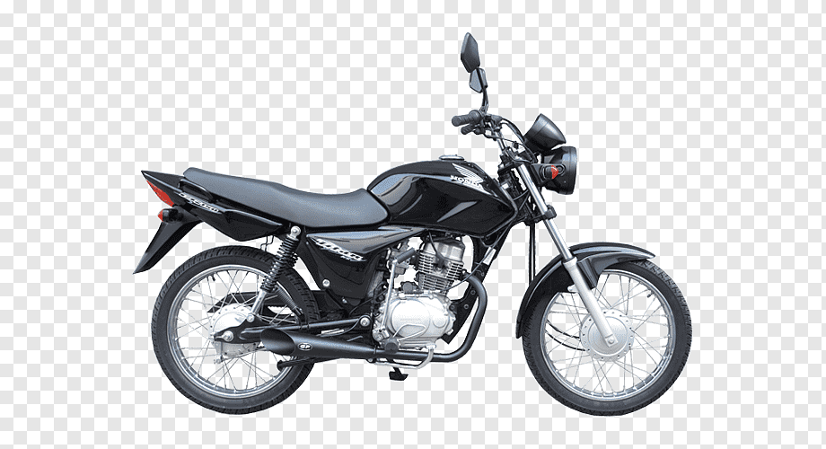

1. As Titans de anos 2006 a 2009 possuem os melhores motores fabricado pela Honda
2. Por ser carburada, ela passa a ser subestimada quando o assunto é sobre economia
porem ainda sim consegue ser uma moto muito economica se regulada corretamente
3. Por ser uma moto leve e com um motor potente, ela bem acertada pode alcançar os incriveis 135KM/h
sendo assim uma moto bem rápida para sua categoria
